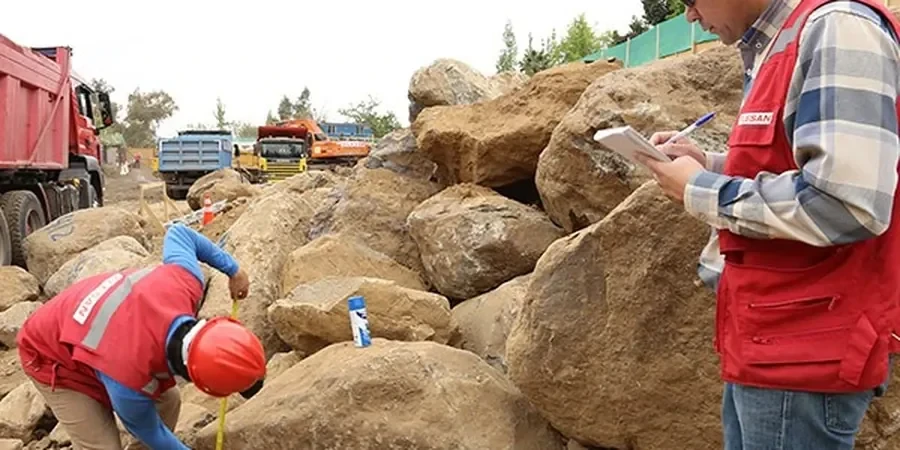

In Chattanooga, our geotechnical services provide a comprehensive foundation for safe and efficient development. From the initial subsurface investigation to final foundation recommendations, we deliver site-specific solutions that respect local geology and regulatory requirements. Our team excels in site characterization, shallow and deep foundation design, slope stability analysis, and construction monitoring. We use consolidated regional experience to navigate the complexities of the Tennessee Valley, ensuring that every project—whether a residential subdivision or a commercial complex—benefits from code-compliant reports and practical recommendations. Learn how our flexible pavement design and shallow foundation design approaches are tailored to local conditions.

Technical details of the service in Chattanooga
Field demonstration
Local geotechnical conditions in Chattanooga
Our firm brings consolidated regional experience to Chattanooga, having navigated the complexities of karst geology and residual soils on numerous local projects. We maintain a calibrated laboratory for index and strength testing, and our engineers are adept at coordinating with local contractors and regulatory authorities to streamline approvals. By adhering strictly to IBC and ASTM standards, we deliver code-compliant reports that withstand scrutiny. Our commitment to understanding Chattanooga's unique subsurface conditions—from sinkhole-prone areas to riverfront sites—ensures that every recommendation is practical and site-specific.
Our services
Common questions
How does karst geology affect foundation design in Chattanooga?
Karst geology introduces risks such as sinkholes, irregular bedrock surfaces, and solution cavities. Foundation design must incorporate thorough subsurface exploration, including probe holes or geophysical surveys, to locate competent bearing strata. Deep foundations like drilled shafts may be required to bypass voids, while shallow foundations need careful evaluation of soil variability. Groundwater fluctuations in solution channels also require attention to drainage and waterproofing.
What are typical soil conditions for residential projects in Chattanooga?
Residential sites often encounter residual clayey silts and silty clays derived from weathered limestone. These soils can have moderate to high plasticity and may shrink or swell with moisture changes. Shallow foundations are common but need to be placed below frost depth and on stable, undisturbed soil. Site preparation may include removing topsoil and addressing any fill or organic layers to prevent differential settlement.
What regulatory standards apply to geotechnical reports in Tennessee?
Geotechnical reports in Tennessee must comply with the International Building Code (IBC) as adopted by the state, along with local amendments. Key standards include ASTM methods for soil testing (e.g., D1586 for SPT, D2487 for classification) and ASCE 7 for seismic design. Reports must be sealed by a licensed Professional Engineer in Tennessee and typically include recommendations for foundation type, bearing capacity, and settlement estimates.
How are sinkhole risks evaluated during a geotechnical investigation in Chattanooga?
Sinkhole risk evaluation involves a combination of desk study of geologic maps, site reconnaissance, and subsurface exploration. Methods include drilling borings with careful logging of voids or cavities, performing geophysical surveys like electrical resistivity, and conducting probe holes at close spacing. If karst features are encountered, additional measures such as grouting or deep foundations may be recommended to mitigate risk.